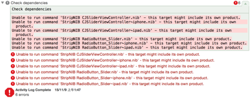

Podspec编辑方法：
首先确认编辑环境，podspec的引号”是否正确
如果Podspec有依赖的系统库，则添加方法如下：
s.libraries = “sqlite3”
如果Podspec有依赖的第三方库，则添加方法如下：
s.dependency ‘FMDB’, ‘~> 2.5’
如果Podspec有依赖的资源，则添加方法如下：
s.resources = “CJSliderViewController/*/.png”

解答：参考Cocoapod compilation fails when loading .xib file
即错误原因为：把非.h.m的文件都放到resouces中，而不要放到soucres中
完！